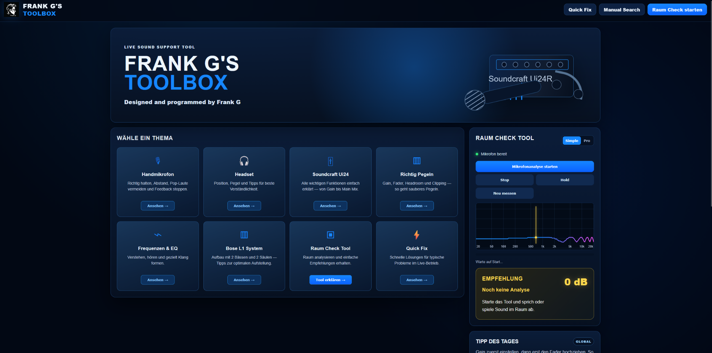

Frank's Toolbox
A practical browser-based audio support toolbox created to help colleagues set up, troubleshoot and optimise the Bose PA system and Soundcraft Ui24R mixer during everyday events.
Overview
Frank's Toolbox was created as a practical support application for colleagues working with the audio equipment at IFEN.
The objective was to provide quick help directly on site when setting up and adjusting the Bose sound system and the Soundcraft Ui24R digital mixer.
Instead of relying only on experience, printed documentation or lengthy internet searches, the toolbox brings together several useful audio and troubleshooting functions in one interface.
Project details
The project was developed to make everyday event preparation easier for colleagues who needed to operate the audio system but did not necessarily work with professional sound equipment every day.
One part of the toolbox focuses on system setup and gain staging. It provides practical guidance for connecting and adjusting the Bose loudspeaker system and the Soundcraft Ui24R mixer so that the basic signal chain can be configured correctly and consistently.
A second important feature is the integrated documentation search. Instead of manually searching through large manuals while working on site, the toolbox makes it possible to quickly find relevant operating instructions and technical information for the equipment.
The application also includes a room-analysis function. Using a measurement microphone, the tool analyses the frequency response of the room and identifies areas where certain frequencies are excessively dominant.
This gives the operator a practical indication of where equalisation may be required and helps improve speech intelligibility and overall sound quality.
PA setup support
Practical guidance helps users configure and connect the Bose loudspeaker system correctly before an event.
Gain staging
The toolbox supports the basic process of setting appropriate input and output levels to achieve a clean and stable audio signal.
Soundcraft Ui24R support
The application provides quick access to information relevant to operating and configuring the digital mixing console.
Manual research
Integrated documentation search makes it possible to quickly locate instructions and technical information while working on site.
Room analysis
The analyser measures the acoustic response of the room and visualises the frequency spectrum.
Frequency guidance
The tool identifies frequencies that are unusually dominant and provides a clear indication of areas that may require EQ adjustment.
Room Analyzer
One of the most useful features of Frank's Toolbox is the integrated room-analysis system.
Every room affects sound differently. Reflections, room dimensions, walls and furnishings can cause certain frequency ranges to become significantly louder than others.
The analyser measures the incoming audio spectrum and presents the frequency distribution visually. The application can then highlight frequencies that appear excessively dominant.
This gives the operator an understandable starting point for adjusting the equaliser on the Soundcraft mixer rather than trying to correct the room entirely by ear.
Technology
Frank's Toolbox is built as a browser-based support application combining audio analysis, technical reference information and practical setup guidance.
Web technologies are used for the interface, while the audio analysis section processes microphone input and visualises the measured frequency spectrum in real time.
The documentation component provides fast access to relevant operating instructions for the Bose sound system and Soundcraft Ui24R, reducing the time required to solve configuration problems during live event preparation.
The project was designed around one goal: provide useful information at the moment it is needed, directly at the event location.